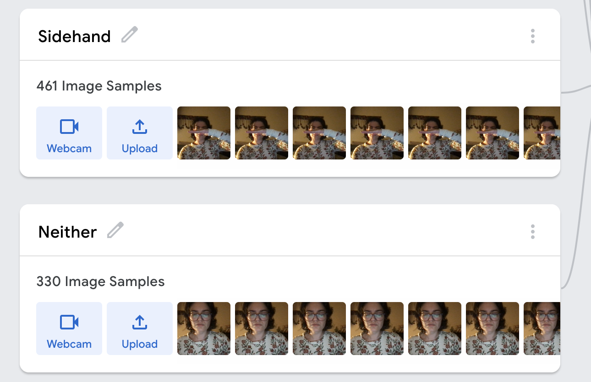
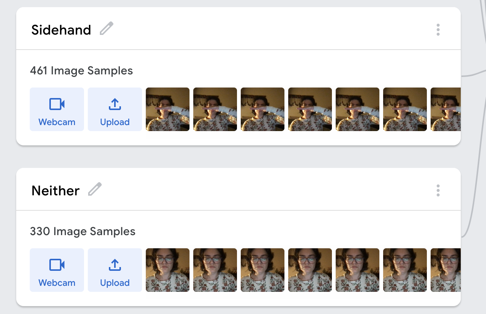
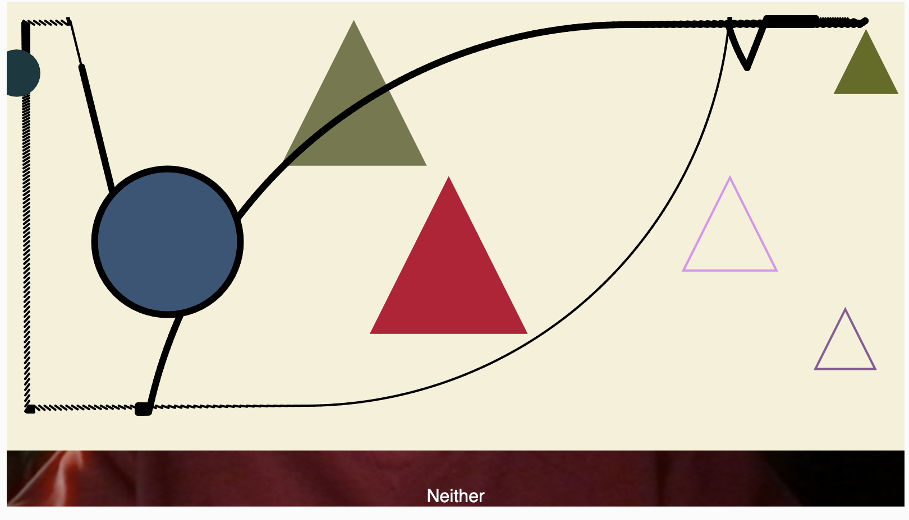
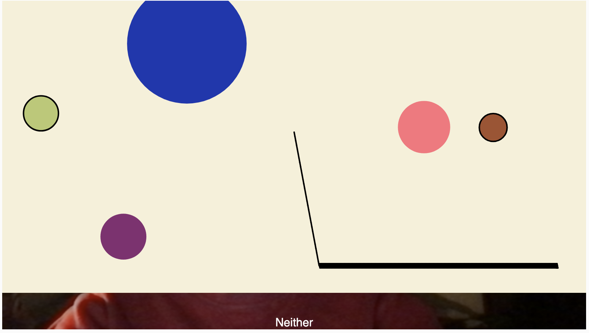
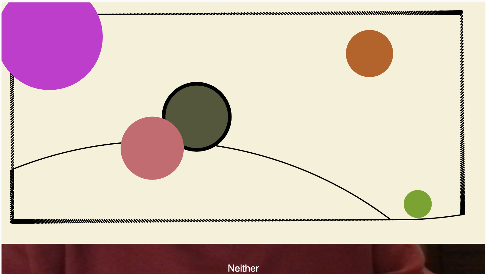

How to use
- Show Paper to the camera to activate the canvas.
- Choose a drawing input: Circle generates circles, Square generates squares, Pencil draws black lines, Palm (left or right) generates triangles.
- Show a Fist to toggle brush thickness (thin ↔️ thick).
- Show Paper again to reset the canvas.
The system relies on webcam classification confidence. Small fluctuations in recognition are part of the interaction.
Live prototype
Allow camera access when prompted. Best experienced on desktop (Chrome).
If the embed does not load, open it directly: p5.js full sketch
Recording
This recording documents the interaction flow of the prototype, showing how physical objects and hand gestures are translated into abstract marks on the canvas.
Demo recorded during development to capture interaction behavior and visual outcomes.
Project overview
Kandinsky Cam Paint explores an alternative way of painting digitally—without buttons, menus, or traditional UI controls. Instead, the system reads the physical world through a webcam and translates recognized objects and gestures into abstract marks.
The visual inspiration comes from Wassily Kandinsky’s work: strong black linework, geometric forms, rhythm, and spatial tension. Rather than copying specific paintings, the goal is to capture the spirit of abstraction and composition through generative behavior.
The experience is intentionally simple and playful, allowing users to create expressive compositions using everyday objects and their own hands.
System diagram
 

Process & iterations
Early exploration
I started with a very direct mapping: showing a circle, square, or pencil would immediately generate many of that shape on the canvas. This helped me quickly test whether the camera, classifier, and drawing logic were working together.
At this stage, the pencil produced short, jittery line segments, and shapes appeared rapidly and repeatedly, sometimes overwhelming the composition.
Refinement
As the interaction evolved, I realized that generating many shapes per input felt less like painting and more like triggering an effect. I experimented with producing a single shape per object input to create a slower, more intentional rhythm.
The pencil tool went through multiple iterations: first drawing short segments, then loose doodle-like motion, and finally transitioning toward straighter lines and gentle arcs to better reflect Kandinsky’s graphic language.
Final direction
The final version balances continuous and discrete marks: the pencil feels gestural and expressive, while shapes act as compositional anchors. The warm canvas background reinforces a paper-like, gallery feel rather than a digital interface.
Unfortunately, I did not capture screenshots from every intermediate stage of development. This is something I would improve in future projects by documenting more consistently.
Challenges
Gesture misclassification
One of the main challenges was misclassification between similar gestures, especially Palm being confused with other classes. This occasionally caused unintended shapes to appear.
Edge clipping
Randomly placed shapes sometimes appeared partially outside the canvas, breaking the composition. This highlighted the importance of spatial constraints in generative systems.
Role in life
Kandinsky Cam Paint is designed as a playful, low-pressure creative ritual. It invites users to experiment with abstraction using physical gestures instead of technical tools.
In a classroom, studio, or exhibition context, it can function as a quick interactive art station where anyone can generate a unique abstract composition in under a minute.

What’s next
- Further refine pencil behavior to feel even more intentional and rhythmic.
- Improve gesture stability with multi-frame confirmation.
- Add clearer onboarding text for first-time users. 